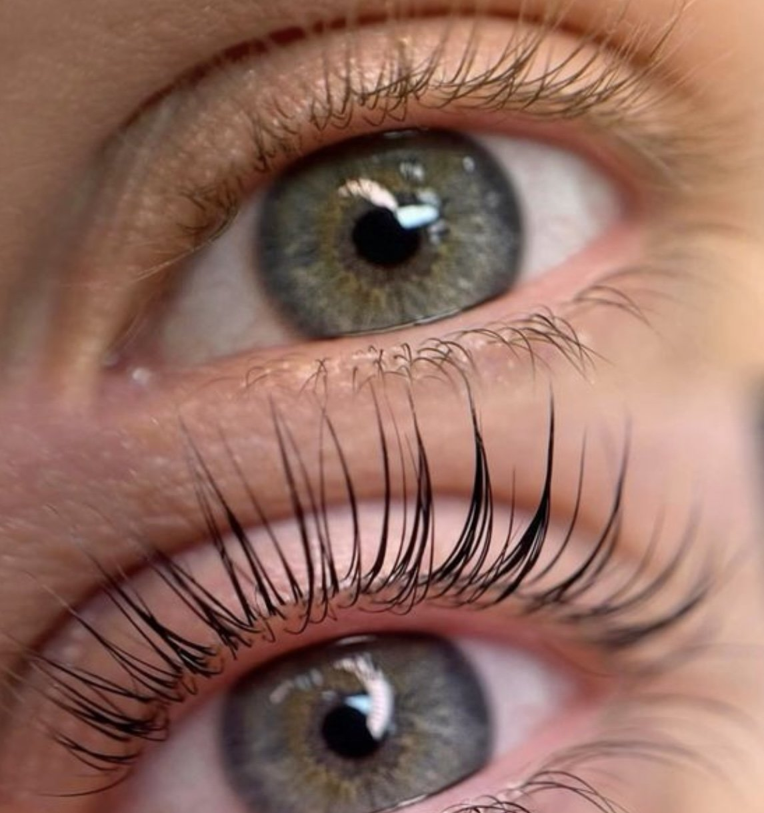
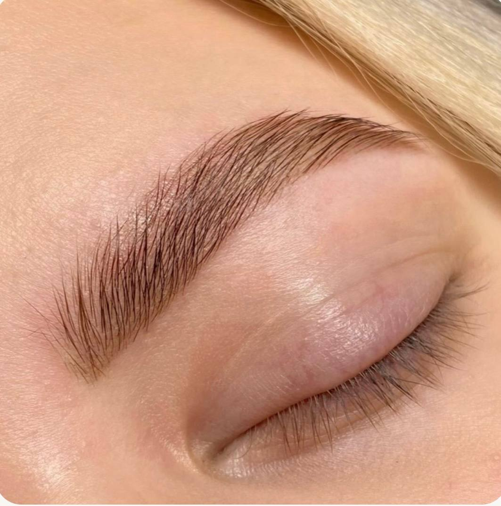
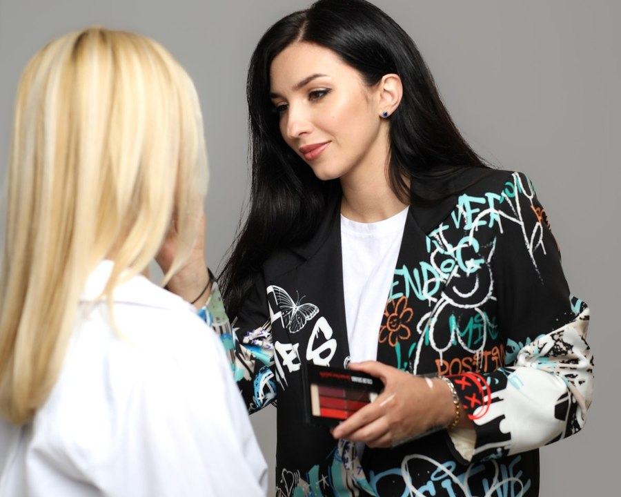
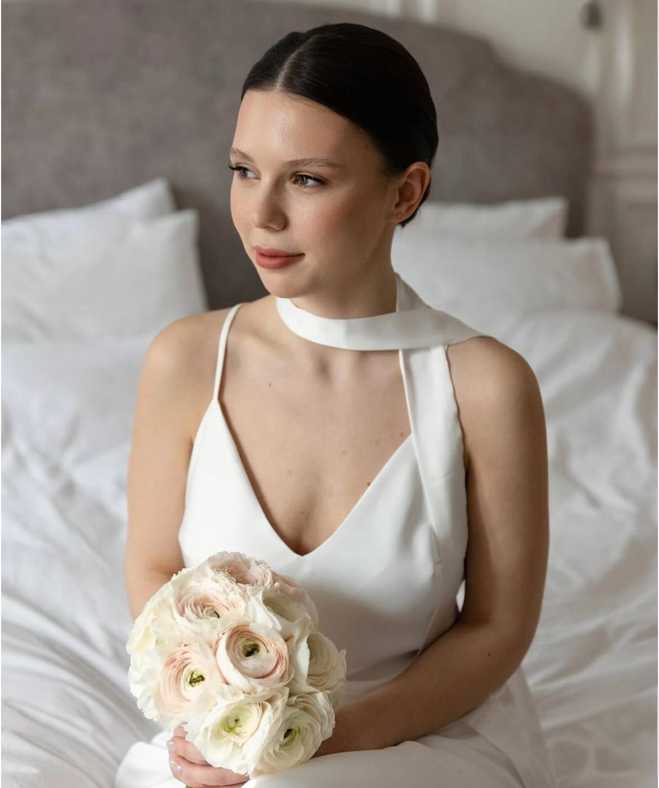

Nasveti za lepoto
Beauty tips
Советы по красоте
Поради з краси
Praktični nasveti o ličenju, trepalnicah, obrveh in negi kože — iz studia v Mariboru.
Practical tips on makeup, lashes, brows and skincare — from the studio in Maribor.
Практические советы по макияжу, ресницам, бровям и уходу за кожей — из студии в Мариборе.
Практичні поради про макіяж, вії, брови та догляд за шкірою — зі студії в Мариборі.
Tri navade, ki naredijo največ razlike
Three habits that make the biggest difference
Три привычки, которые дают наибольшую разницу
Čistite kožo zvečer
Cleanse in the evening
Очищайте кожу вечером
Ličilo, sebum in prah se čez dan usedejo na kožo. Zvečer jo temeljito očistite, zjutraj zadostuje nežno umivanje — koža se ponoči obnavlja in ne potrebuje dvojnega čiščenja.
Makeup, sebum and dust settle on the skin during the day. Cleanse thoroughly in the evening; in the morning a gentle wash is enough — the skin regenerates at night and does not need double cleansing.
Макияж, себум и пыль за день оседают на коже. Вечером очищайте тщательно, утром достаточно мягкого умывания — кожа ночью восстанавливается и не требует двойного очищения.
Rezervirajte vsakih 6–8 tednov
Book every 6–8 weeks
Записывайтесь каждые 6–8 недель
Laminacija trepalnic in obrvi ter korekcija oblike držijo približno toliko časa. Če počakate dlje, se oblika izgubi in tretma traja dlje. Več o tem: laminacija trepalnic in korekcija obrvi.
Lash and brow lamination and shape correction last about that long. If you wait longer, the shape is lost and the treatment takes more time. More: lash lamination and brow shaping.
Ламинирование ресниц и бровей и коррекция формы держатся примерно столько. Если ждать дольше, форма теряется и процедура занимает больше времени. Подробнее: ламинирование ресниц и коррекция бровей.
Prinesite fotografijo
Bring a photo
Принесите фотографию
Pri ličenju in pričeski fotografija pove več kot opis. Pokažite, kaj vam je všeč in česa ne želite — tako se izognemo nesporazumom. Kako poteka ličenje v Mariboru.
For makeup and hairstyling a photo says more than a description. Show what you like and what you do not want — it avoids misunderstandings. How makeup in Maribor works.
Для макияжа и причёски фотография скажет больше описания. Покажите, что вам нравится и чего вы не хотите — так мы избежим недопонимания. Как проходит макияж в Мариборе.

Korejska laminacija trepalnic v Mariboru: komu ustreza in kako poteka
Korean lash lamination in Maribor: who it suits and how it works
Корейское ламинирование ресниц в Мариборе: кому подходит и как проходит
Корейське ламування вій у Мариборі: кому підходить і як проходить
Komu je namenjena, kako poteka tretma, koliko zdrži in kako skrbeti po njem.
Who it is for, how the treatment works, how long it lasts and how to care for it.
Кому подходит, как проходит процедура, сколько держится и как ухаживать.
Кому підходить, як проходить процедура, скільки тримається і як доглядати.

Korekcija in barvanje obrvi v Mariboru: kako izbrati obliko
Brow shaping and tinting in Maribor: how to choose the right shape
Коррекция и окрашивание бровей в Мариборе: как выбрать форму
Корекція та фарбування брів у Мариборі: як вибрати форму
Kako izbrati obliko glede na obraz, kako poteka tretma in kako skrbeti po njem.
How to choose a shape for your face, how the treatment works and how to care for it.
Как подобрать форму под лицо, как проходит процедура и как ухаживать после.
Як підібрати форму під обличчя, як проходить процедура і як доглядати після.

Ličenje v Mariboru: dnevno, večerno in poročno
Makeup in Maribor: day, evening and bridal
Макияж в Мариборе: дневной, вечерний и свадебный
Макіяж у Мариборі: денний, вечірній і весільний
Katero ličenje izbrati za katero priložnost, kako poteka in koliko zdrži.
Which makeup to choose for which occasion, how it works and how long it lasts.
Какой макияж выбрать для какого случая, как проходит и сколько держится.
Який макіяж вибрати для якої нагоди, як проходить і скільки тримається.

Poročno ličenje v Mariboru: kako izbrati videz za poroko
Bridal makeup in Maribor: how to choose your wedding look
Свадебный макияж в Мариборе: как выбрать образ
Весільний макіяж у Мариборі: як вибрати образ
Poskusno ličenje, kako dolgo traja in kaj priporočam pred poroko.
Trial makeup, how long it takes and what I recommend before the wedding.
Пробный макияж, сколько времени занимает и что советую до свадьбы.
Пробний макіяж, скільки триває і що раджу до весілля.